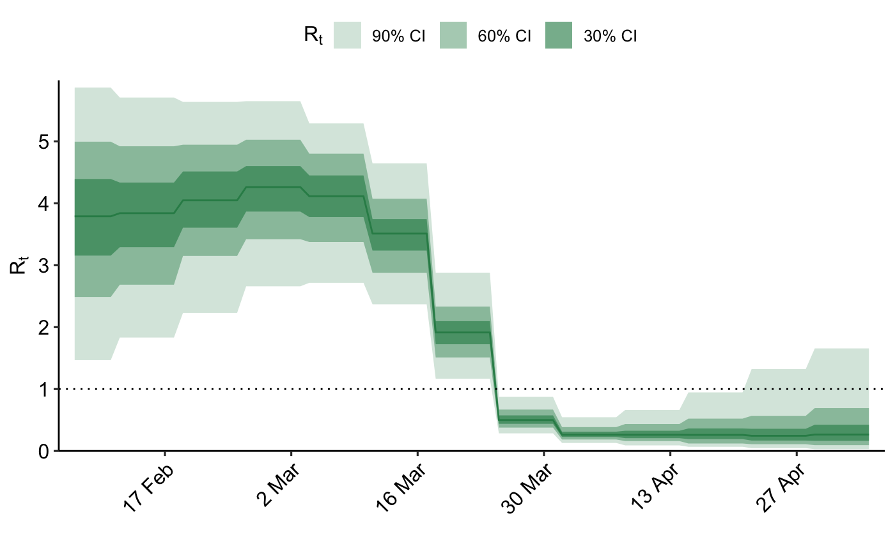
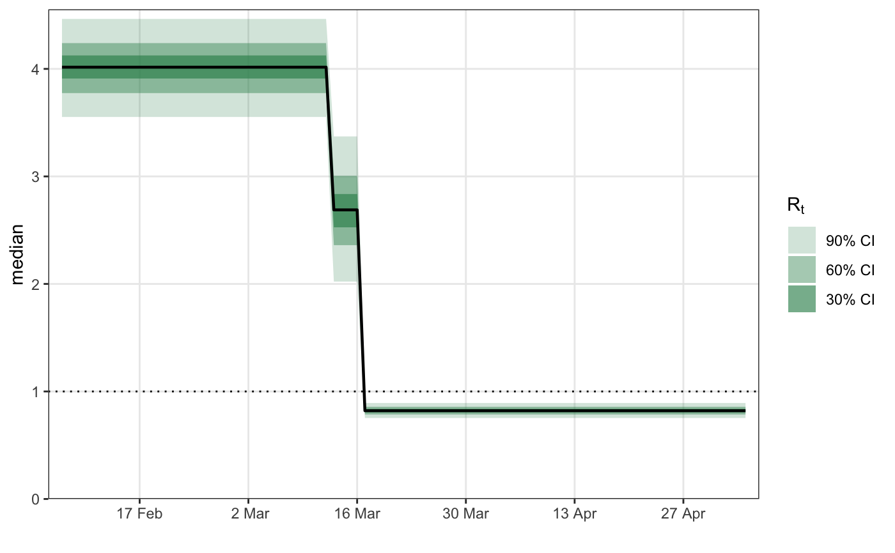
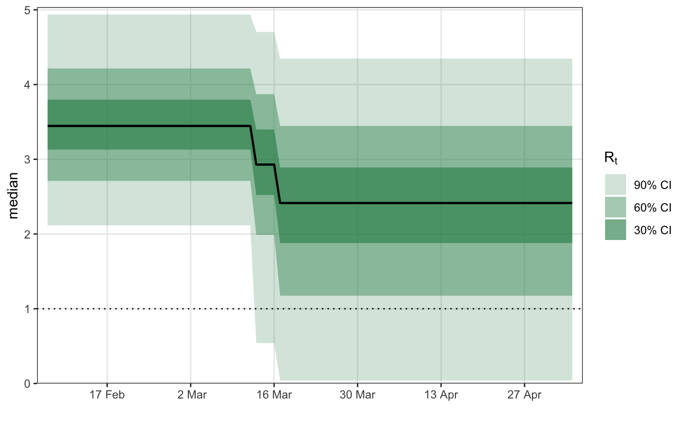

epirt defines a model for reproduction rates. For more
details on the model assumptions, please read the model description
vignette.
epirt( formula, link = "log", center = FALSE, prior = rstanarm::normal(scale = 0.5), prior_intercept = rstanarm::normal(scale = 0.5), prior_covariance = rstanarm::decov(scale = 0.5), ... )
| formula | An object of class |
|---|---|
| link | The link function. This must be either |
| center | If |
| prior | Same as in |
| prior_intercept | Same as in |
| prior_covariance | Same as in |
| ... | Additional arguments for |
An object of class epirt.
epirt has a formula argument which defines the linear predictor, an argument link defining the link function,
and additional arguments to specify priors on parameters making up the linear predictor.
A general R formula gives a symbolic description of a model. It takes the form y ~ model, where y is the response
and model is a collection of terms separated by the + operator. model fully defines a linear predictor used to predict y.
In this case, the “response” being modeled are reproduction numbers which are unobserved.
epirt therefore requires that the left hand side of the formula takes the form R(group, date),
where group and date refer to variables representing the region and date respectively.
The right hand side can consist of fixed effects, random effects, and autocorrelation terms.
# \donttest{ library(epidemia) data("EuropeCovid") options(mc.cores = parallel::detectCores()) data <- EuropeCovid$data data$week <- lubridate::week(data$date) # collect arguments for epim args <- list( inf = epiinf(gen = EuropeCovid$si), obs = epiobs(deaths ~ 1, i2o = EuropeCovid$inf2death, link = scaled_logit(0.02)), data = data, algorithm = "fullrank", # For speed - should generally use "sampling" iter = 2e4, group_subset = "France", seed = 12345, refresh = 0 ) # a simple random walk model for R args$rt <- epirt( formula = R(country, date) ~ rw(time = week), link = scaled_logit(7) ) fm1 <- do.call(epim, args)#> Warning: Pareto k diagnostic value is 1.09. Resampling is disabled. Decreasing tol_rel_obj may help if variational algorithm has terminated prematurely. Otherwise consider using sampling instead.plot_rt(fm1)# Modeling effects of NPIs args$rt <- epirt( formula = R(country, date) ~ 1 + lockdown + public_events, link = scaled_logit(7) ) fm2 <- do.call(epim, args)#> Warning: Pareto k diagnostic value is 1.29. Resampling is disabled. Decreasing tol_rel_obj may help if variational algorithm has terminated prematurely. Otherwise consider using sampling instead.plot_rt(fm2)# shifted gamma prior for NPI effects args$rt <- epirt( formula = R(country, date) ~ 1 + lockdown + public_events, link = scaled_logit(7), prior = shifted_gamma(shape = 1/2, scale = 1, shift = log(1.05)/2) ) # How does the implied prior look? args$prior_PD <- TRUE fm3 <- do.call(epim, args)#> Warning: Pareto k diagnostic value is 0.74. Resampling is unreliable. Increasing the number of draws or decreasing tol_rel_obj may help.plot_rt(fm3)# }